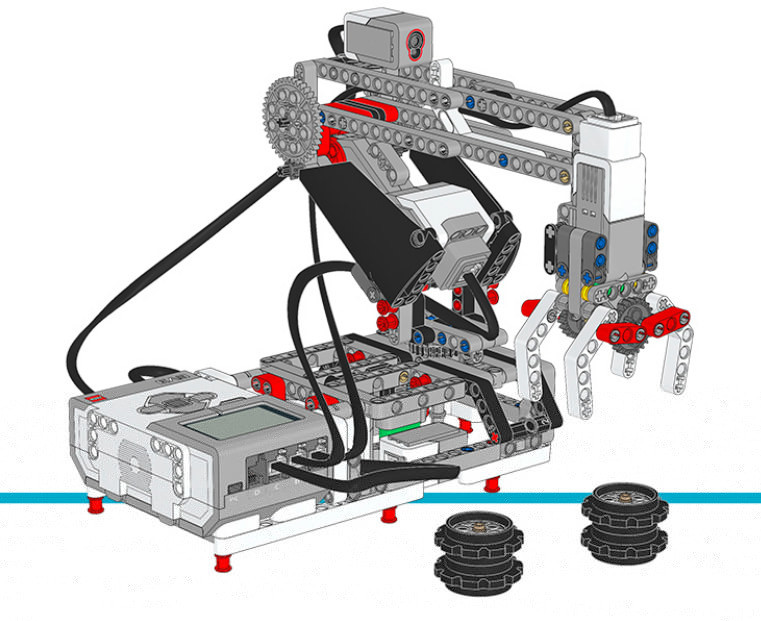

Robot Arm H25¶
This example program makes the robot (Figure 18) move the black wheel hub stacks around forever. The robot arm will first initialize and then start moving the hubs around.
You can find building instructions for the robot on the LEGO Education website.
Tip: When building the robot, reverse the orientation of the EV3 Brick such that the microSD card is easily accessible.

{kind=link}
Figure 18 Robot Arm H25
#!/usr/bin/env pybricks-micropython
from pybricks import ev3brick as brick
from pybricks.ev3devices import Motor, TouchSensor, ColorSensor
from pybricks.parameters import Port, Stop, Direction
from pybricks.tools import wait
# Configure the gripper motor on Port A with default settings.
gripper_motor = Motor(Port.A)
# Configure the elbow motor. It has an 8-teeth and a 40-teeth gear
# connected to it. We would like positive speed values to make the
# arm go upward. This corresponds to counterclockwise rotation
# of the motor.
elbow_motor = Motor(Port.B, Direction.COUNTERCLOCKWISE, [8, 40])
# Configure the motor that rotates the base. It has a 12-teeth and a
# 36-teeth gear connected to it. We would like positive speed values
# to make the arm go away from the Touch Sensor. This corresponds
# to counterclockwise rotation of the motor.
base_motor = Motor(Port.C, Direction.COUNTERCLOCKWISE, [12, 36])
# Limit the elbow and base accelerations. This results in
# very smooth motion. Like an industrial robot.
elbow_motor.set_run_settings(60, 120)
base_motor.set_run_settings(60, 120)
# Set up the Touch Sensor. It acts as an end-switch in the base
# of the robot arm. It defines the starting point of the base.
base_switch = TouchSensor(Port.S1)
# Set up the Color Sensor. This sensor detects when the elbow
# is in the starting position. This is when the sensor sees the
# white beam up close.
elbow_sensor = ColorSensor(Port.S3)
# Initialize the elbow. First make it go down for one second.
# Then make it go upwards slowly (15 degrees per second) until
# the Color Sensor detects the white beam. Then reset the motor
# angle to make this the zero point. Finally, hold the motor
# in place so it does not move.
elbow_motor.run_time(-30, 1000)
elbow_motor.run(15)
while elbow_sensor.reflection() < 32:
wait(10)
elbow_motor.reset_angle(0)
elbow_motor.stop(Stop.HOLD)
# Initialize the base. First rotate it until the Touch Sensor
# in the base is pressed. Reset the motor angle to make this
# the zero point. Then hold the motor in place so it does not move.
base_motor.run(-60)
while not base_switch.pressed():
wait(10)
base_motor.reset_angle(0)
base_motor.stop(Stop.HOLD)
# Initialize the gripper. First rotate the motor until it stalls.
# Stalling means that it cannot move any further. This position
# corresponds to the closed position. Then rotate the motor
# by 90 degrees such that the gripper is open.
gripper_motor.run_until_stalled(200, Stop.COAST, 50)
gripper_motor.reset_angle(0)
gripper_motor.run_target(200, -90)
def robot_pick(position):
# This function makes the robot base rotate to the indicated
# position. There it lowers the elbow, closes the gripper, and
# raises the elbow to pick up the object.
# Rotate to the pick-up position.
base_motor.run_target(60, position, Stop.HOLD)
# Lower the arm.
elbow_motor.run_target(60, -40)
# Close the gripper to grab the wheel stack.
gripper_motor.run_until_stalled(200, Stop.HOLD, 50)
# Raise the arm to lift the wheel stack.
elbow_motor.run_target(60, 0, Stop.HOLD)
def robot_release(position):
# This function makes the robot base rotate to the indicated
# position. There it lowers the elbow, opens the gripper to
# release the object. Then it raises its arm again.
# Rotate to the drop-off position.
base_motor.run_target(60, position, Stop.HOLD)
# Lower the arm to put the wheel stack on the ground.
elbow_motor.run_target(60, -40)
# Open the gripper to release the wheel stack.
gripper_motor.run_target(200, -90)
# Raise the arm.
elbow_motor.run_target(60, 0, Stop.HOLD)
# Play three beeps to indicate that the initialization is complete.
brick.sound.beeps(3)
# Define the three destinations for picking up and moving the wheel stacks.
LEFT = 160
MIDDLE = 100
RIGHT = 40
# This is the main part of the program. It is a loop that repeats endlessly.
#
# First, the robot moves the object on the left towards the middle.
# Second, the robot moves the object on the right towards the left.
# Finally, the robot moves the object that is now in the middle, to the right.
#
# Now we have a wheel stack on the left and on the right as before, but they
# have switched places. Then the loop repeats to do this over and over.
while True:
# Move a wheel stack from the left to the middle.
robot_pick(LEFT)
robot_release(MIDDLE)
# Move a wheel stack from the right to the left.
robot_pick(RIGHT)
robot_release(LEFT)
# Move a wheel stack from the middle to the right.
robot_pick(MIDDLE)
robot_release(RIGHT)